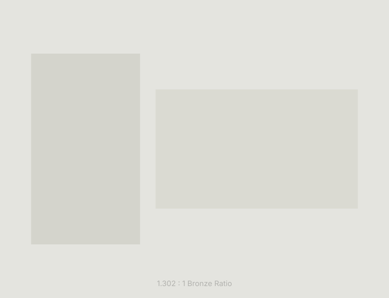

Web Director / Marketer
木幡 博史
Hiroshi Kowata
Webコンテンツ運営・CRM/MAを軸に約20年のキャリア。会員制マッチングサービスをはじめとするWebサービスにおいて、コンテンツ制作・メール配信・顧客対応・データ分析・施策立案まで一貫して担当してきました。
職務要約
直近の株式会社ソレイユでは、Webディレクター・運営責任者としてチーム月商1,500万円規模のうち約50％を単独で担当し、コスト対比粗利3倍を継続維持。主任リーダーとして最大4名のマネジメントも経験し、属人化していた体制を「誰でも成果を出せる持続可能な運営基盤」へと再構築しました。
現在では職業訓練校にてHTML/CSS・JavaScript・Python・Photoshop/Illustratorを体系的に学習中。技術的理解を深め、Webディレクション・制作の両面で即戦力として貢献できる人材を目指しています。
Work Style
多角的な視点を、ものづくりに。
現場での意思決定から数値分析まで、常に「使う人の行動」を起点に施策を組み立ててきました。
職務経歴
会員制Webサービスの企画・運営を行う企業にて、会員向けサイトのコンテンツ更新・メール配信（1日7本以上）・顧客対応・データ分析・施策立案を一貫して担当。担当サービス3媒体の運営責任者として統括し、ほかメンバー不在時は全媒体を単独で担当。成果を上げていた上司の異動に伴い業務を引き継ぎ、担当領域の意思決定まで担うポジションを確立しました。
- チーム月商1,500万円規模のうち50％を担当。コスト対比粗利3倍を継続維持
- 読者数約2,000名への配信管理（開封率10％）・パーソナライズ施策（個別提案・限定キャンペーン等）を実施
- 日次・月次で購入率・リピート率・媒体別反応率を集計・分析し、運営方針の意思決定を担当
- 主任リーダーとして最大4名のメンバーをマネジメント（1〜3年）。主体性を引き出す育成方針を採用
- 属人化していた運用体制を標準化し、誰でも一定の成果を再現できる持続可能な運営基盤を構築
- HTML/CSSを活用したLP更新・改善を担当（実務経験）。UI・配色・視線誘導（F型レイアウト等）購買心理学を活用したコンテンツ設計
マッチングアプリの運営サポート全般を担当し、正確性とスピードを両立。コンテンツ配信・バナー制作・顧客対応・データ集計・企画立案まで幅広く従事しました。
- キャンペーン配信を「中身見せ型」「見せない型」「ゲリラ型」の3パターンにルーティン化し、曜日・客層別に使い分け
- 未購入会員への時限式オファーや購入回数別施策を設計し、離脱率低下・初回〜3回購入までの定着を促進
- Canvaを用いたバナー作成・編集（HTML親和性を意識した横長バナー、客層トーン・配色）
- Excelによる日次・月次データ集計（新規購入者率・媒体別反応率・リピート率等）→キャンペーン企画・運営方針に反映

Approach
検証を止めない運用設計
配信パターンのルーティン化、時限式オファーの設計など、感覚ではなく数値に基づいた仮説検証を積み重ねてきました。
Webサイト運営・チャット対応スタッフとして、お知らせ・メルマガ配信、バナー制作、年齢認証/違反行為の監視、問い合わせ対応、データ集計、キャンペーン企画、運営方針提案まで幅広く担当しました。
大手通信プロバイダの新規契約・乗り換え案内サポート。契約から開通までの案内、工事日予約受付、営業アシスタント業務などに従事しました。
建築における測量・墨出し業務。中層マンション施工（RC造、地下1階付14階建）をはじめ、個人住宅・病院・高層ビルなど幅広い現場を担当しました。
スキル・習得ツール
Webディレクション・運営
- Webサービス運営・コンテンツ管理（会員制サービス／マッチングアプリ）
- メール配信設計・パーソナライズ施策（開封率約10％・読者数2,000人規模）
- データ集計・分析 → 施策立案・運営方針の意思決定（日次・月次KPI管理）
- CRM/MA運用・キャンペーン企画・運営方針提案
マネジメント
- 主任リーダーとして最大4名のメンバーマネジメント（最長3年）
- 属人化していた運用体制の標準化・持続可能な運営基盤の構築
- クレーム対応・顧客関係強化・チームの業務効率化
Tech Stack
横にスクロール、またはドラッグでめくれます
HTML / CSS
前職でLPの更新・改善提案を実務担当。AIを活用したコーディングも実践投入。
JavaScript
訓練校で基礎から習得。動的コンテンツの実装・カスタマイズに対応可能。
Python
BizDirector AI・Loop Learningの2つの自作アプリ開発で実践的に活用。
Photoshop
訓練校で基礎を習得。バナー制作・素材加工に対応可能。
Illustrator
訓練校で基礎を習得。ロゴ・図版制作などベクター素材に対応可能。
Canva
実務でバナー・キャンペーン画像を継続的に制作・運用。
Excel
VLOOKUP・IFS・COUNTIFなどの関数を実務で日常的に使用し集計・分析。
Git / GitHub
訓練校・個人開発（BizDirector AI等）でバージョン管理を実践。
CRM / MA
読者数2,000人規模への配信設計・パーソナライズ施策を実務で運用。
現在の取り組み
職業訓練校（2024年〜）
池袋のFelicaにてWebデザイン・開発を体系的に学習中。HTML/CSS・JavaScript・jQuery・Python・Illustrator・Photoshopをカバー。
BizDirector AI 開発
Python（Streamlit）＋Gemini APIを使った業務改善Webアプリを独自開発。Renderにデプロイ済み。
Loop Learning 開発
HTML/CSS/jQueryの学習者向けeラーニングシステムを開発。「挫折ゼロ」をコンセプトにした写経ミッション機能を実装。
Now
作ることも、届けることも。
運営者としての経験に、制作者としてのスキルを重ねていく。二つの視点を行き来できることが、次のフェーズでの強みになると考えています。
自己PR
Webコンテンツ運営マーケティングの実力（数値実績を伴う成果）
Webコンテンツの運営・管理をマーケティング寄りの立場で約20年経験してきました。直近では成果をあげていた上司がマネジメント職へ移動する際に業務を託され、そのノウハウを吸収・再現することでチームの中核として担当領域の意思決定を担いました。チーム月間売上1,500万円規模の運用においてコスト対比粗利3倍を継続して維持し、数値結果でも成果を示してきました。
データドリブンな制作改善と再現性のある運営設計
日次・月次で購入率・リピート率・媒体別反応率を集計分析し、運営方針の意思決定・改善施策へと繋げてきました。一時的な成果ではなく日次売上の均一化・底上げを重視した再現性のある売上設計を意識し、曜日ごとの購買傾向に基づく配信設計・キャンペーンタイミングの最適化（前日夜＋当日朝2回配信）等、数値に基づいたPDCAを継続してきました。
チームマネジメントと「持続可能な運営基盤」の構築
主任リーダーとして最大4名のメンバーをマネジメントし、主体性を引き出す育成方針で組織をまとめてきました。属人化していた運用体制を、誰でも一定の成果を出せる「持続可能な運営基盤」へと再構築した経験があります。これまでのキャリアは社内外からの声掛け・紹介で繋いできた部分が大きく、一緒に働いた方々から継続して指名されてきたことが自分の強みと考えています。